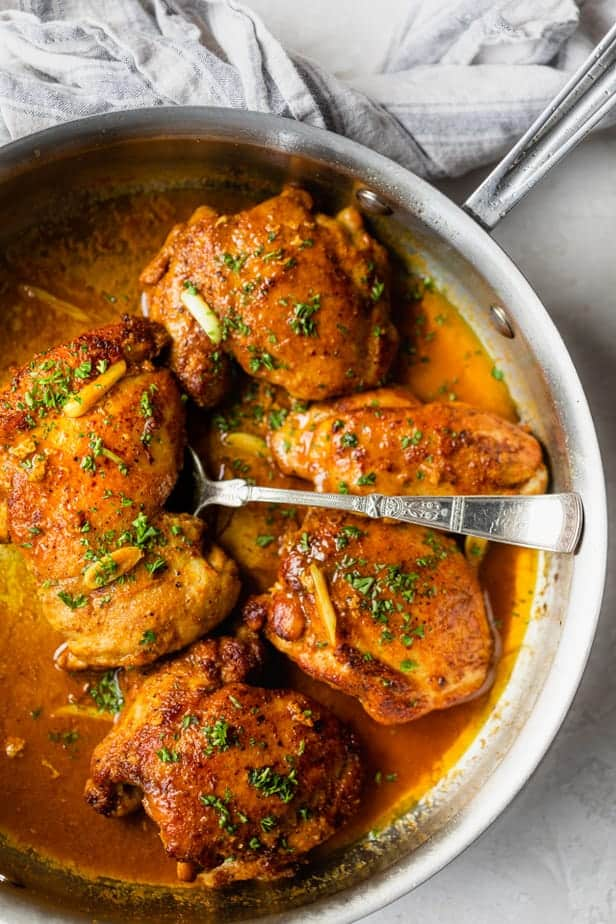

Pan Seared Chicken Thighs

Description
Pan seared chicken thighs are an excellent method of preparing juicy, tender chicken in a skillet. They can be ready in 15 minutes and are easily adaptable!
Ingredients
- 2-3 tablespoons olive oil
- 1.5 pounds chicken thighs boneless, skinless
- 1/2 teaspoon onion powder
- 1/2 teaspoon cumin
- 1/2 teaspoon coriander
- 1/2 teaspoon paprika
- 4 cloves garlic clove
- 1/2 cup chicken broth
Steps
- Heat olive oil in a large skillet over medium heat.
- Pat chicken thighs dry with paper towel. Season chicken thighs with onion powder, cumin, coriander, paprika, turmeric, salt, and pepper.
- Add seasoned chicken thighs to the skillet, smooth side down; cook for 5-7 minutes without moving, and then flip when the chicken easily releases on its own. Cook until the juices run clear, an additional 7-10 minutes, depending on the thickness of the chicken thighs.
- Add garlic and cook until garlic is golden and fragrant, about 30 seconds. Pour chicken broth to deglaze the bottom and sides of pan with the crispy browned bits until they’re no longer sticking to the pan.
- Remove from heat, spoon sauce over chicken. Garnish with fresh chopped parsley and serve immediately..